超！付箋電卓 Web 版 使い方マニュアル
（アプリの版: Web 版 v5 2026-11-03 作成）
超！付箋電卓は、計算した数字を付箋にしてキャンバスに貼っておき、あとで足したり、計算に使ったりできる電卓です。
- 消費税（10%・8%）の税込・税抜の計算ができます。
- 円・ドル・ユーロを、その日のレートで直せます。
- 広告は出ません。
- iPhone・iPad・Android・パソコンのブラウザで使えます。
- 写真の数字は、説明のために作った見本です。
もくじ
- ホーム画面に追加する
- 画面の見方
- 計算する
- 付箋を作る
- 付箋を使う
- 付箋の計算式を見る
- 選んだ付箋だけ足す
- 付箋を消す・戻す
- 消費税
- 円・ドル・ユーロ
- キャンバス（付箋を貼る画面）
- 履歴とメニュー
- 困ったときは
1. ホーム画面に追加する
- iPhone（iPad）の Safari で、次の住所を開きます。
https://chocorin0000.github.io/chou-fusen/
- 画面の下（iPad は上）の共有のマーク（四角から上向きの矢印が出ている絵）を押します。
- 下へなぞって「ホーム画面に追加」→ 右上の「追加」。
- ホーム画面に、右下に赤い「web」の札がついたアイコンが出れば完了です。アイコンから開くと、画面いっぱいに出ます。
- Android のスマホは、Chrome で同じ住所を開き「︙」→「ホーム画面に追加」。
- パソコンでも、ブラウザで同じ住所を開けば使えます。キーボードの数字・＋−＊／・Enter・Backspace・Esc（C）でも打てます。
- 新しい版が出たときは、アイコンから開き直すと自動で新しくなります。
- 一度開いたあとは、電波がないときでも使えます（通貨のレートを読むときだけ、インターネットが要ります）。
2. 画面の見方
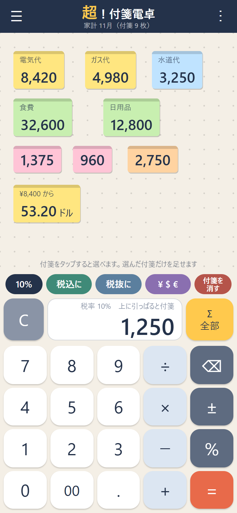
開いたところ（見本の付箋）
| 場所 |
すること |
| 上の「☰」 |
キャンバス（付箋を貼る画面）を切り替える・作る |
| 上の「︙」 |
メニュー（履歴・通貨・消費税の設定・使い方 など） |
| 真ん中の広い所 |
キャンバス。付箋が貼られる場所 |
| 「10%」 |
今使っている消費税の税率。押すと消費税の画面 |
| 「税込に」「税抜に」 |
今の数字を、税込・税抜に直す |
| 「¥ $ €」 |
円・ドル・ユーロに直す |
| 「付箋を消す」 |
付箋を全部消す・選んだ付箋だけ消す・戻す |
| 「C」 |
計算を最初からにする |
| 白い欄 |
計算の数字。上に引っぱると付箋になる |
| 「Σ」 |
付箋の合計（選んだ付箋があればその合計、なければ全部） |
3. 計算する
ふつうの電卓と同じように、押した順に計算します。
- 例: 「1」「2」「0」「0」「＋」「3」「0」「0」「＝」→ 1,500
- 「＝」を続けて押すと、同じ計算をくり返します（「＋ 100 ＝ ＝ ＝」で 100 ずつ足す）。
- 「⌫」は 1 字消す、「±」はプラスとマイナスを入れかえます。
- 「％」: 「200 ＋ 10 ％」→ 220（10% 増し）、「200 × 10 ％」→ 20（200 の 10%）。
- 計算の数字に誤差は出ません（0.1 ＋ 0.2 ＝ 0.3）。15 けたまで打てます。
- 白い欄の左上に、計算の途中（例「1,200 ＋」）が小さく出ます。
4. 付箋を作る
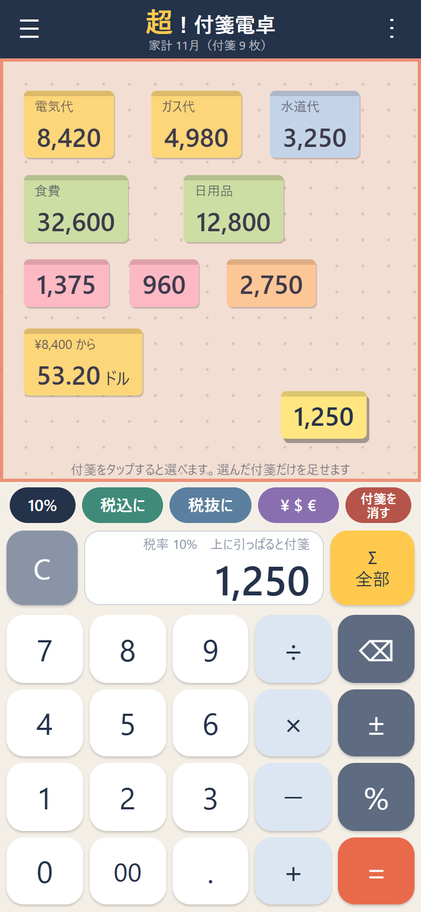
白い欄を上へ引っぱっているところ
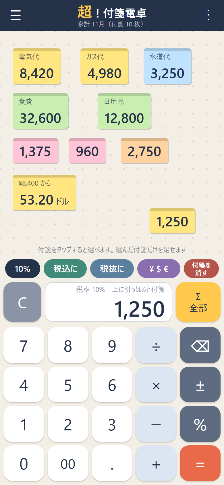
離すと、その場所に貼られる
- 計算して、白い欄に数字を出します。
- 白い欄を指で押さえたまま、上（キャンバス）へ引っぱります。 指の上に付箋が出て、キャンバスが赤く囲まれます。
- 貼りたい場所で指を離すと、付箋になって貼られます。
- 電卓の数字は消えずに残ります。 続けて計算できます。
- 付箋にしたら数字を消したい（0 にしたい）ときは、右上の「︙」→「付箋にしたあと、数字を欄に: 残す」で「残さない」に切り替えます。
- 付箋の幅は、数字のけた数に合わせて変わります。
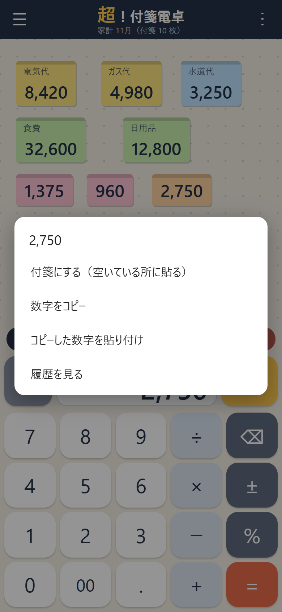
白い欄を長押しすると出るメニュー
- 白い欄を長押しすると、「付箋にする（空いている所に貼る）」「数字をコピー」「コピーした数字を貼り付け」「履歴を見る」が出ます。
5. 付箋を使う
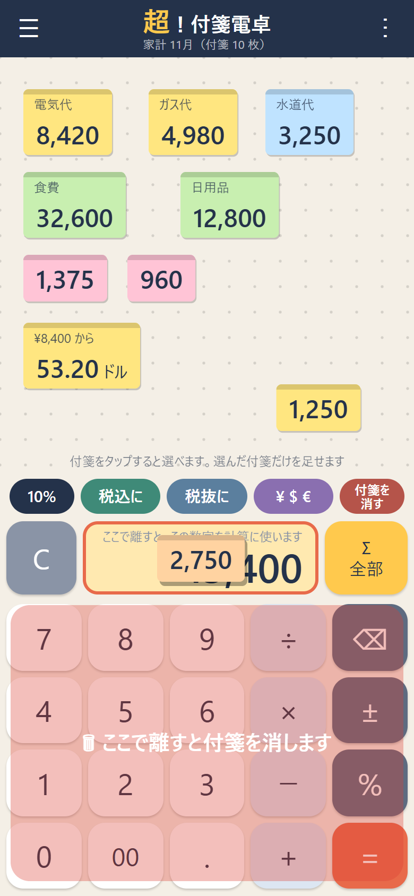
付箋を白い欄へ引っぱると、その数字を計算に使う
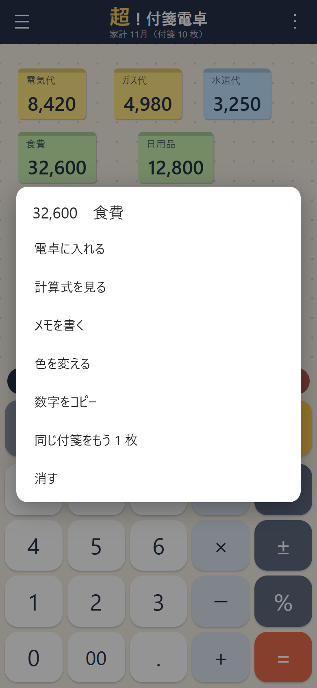
付箋を長押しすると出るメニュー
| すること |
やり方 |
| 付箋の数字を計算に使う |
付箋を白い欄まで引っぱって離す（欄が黄色くなる）。付箋はそのまま残ります |
| 付箋を動かす |
付箋を引っぱって、キャンバスの好きな所で離す |
| 選ぶ（合計に使う） |
付箋を 1 回タップ（赤い枠と ✓ が付く）。もう一度タップでやめる |
| メモを書く |
付箋を 2 回続けてタップ（例: 電気代、A 社、ランチ）。メモは付箋の左上に小さく出ます |
| メニュー |
付箋を長押し: 電卓に入れる・計算式を見る・メモを書く・色を変える・数字をコピー・同じ付箋をもう 1 枚・消す |
- 付箋の色は 5 色（黄色・ピンク・緑・水色・オレンジ）。新しく作る付箋の色は「︙」→「新しい付箋の色」で選べます。
6. 付箋の計算式を見る
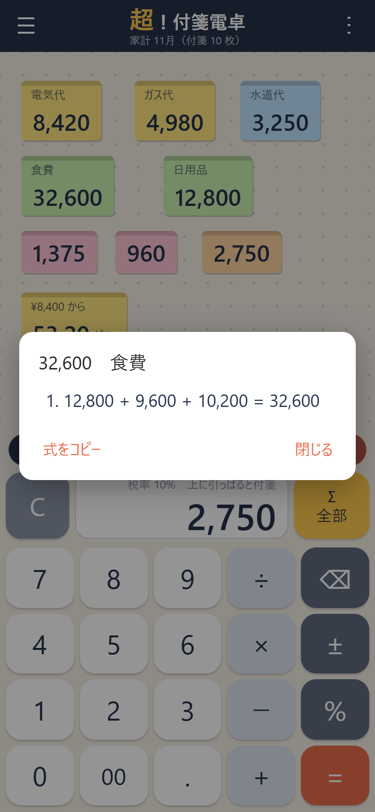
付箋を長押し →「計算式を見る」
付箋には、その数字が出てくるまでの計算式が一緒に残ります。あとで「この数字は何の計算だったかな？」と思ったときに見られます。
- 付箋を長押しして、「計算式を見る」を押します。
- その数字になるまでの計算が、順番に並びます。
- 例: 「1,200 ＋ 300 ＝ 1,500」→「1,500 × 2 ＝ 3,000」→「3,000 の税込（10%）＝ 3,300」
- 「式をコピー」で、式をほかのアプリに貼り付けられます。
- 次の計算も、前の式につながって残ります。
- 付箋を白い欄に入れて、続けて計算したとき（その付箋の式も引き継ぎます）
- 税込・税抜、％、円・ドル・ユーロ（そのときのレートも残ります）
- Σ や「合計を電卓へ」で足したとき（足した付箋の式と、合計の式）
- 履歴から作った付箋
- 「C」を押したり、答えのあとに新しい数字を打ち始めたりすると、そこから新しい式になります。
- 打った数字をそのまま付箋にしたときと、計算式を覚えるようになる前（Web 版 v4 まで）に作った付箋は、「計算式がありません」と出ます。
- 式は 40 行まで残ります（それより長いときは、古い行から消えます）。
7. 選んだ付箋だけ足す
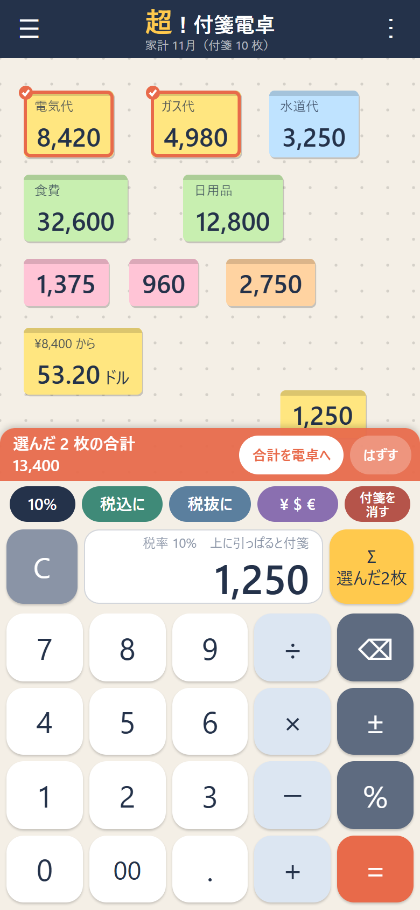
2 枚選ぶと、下に赤い帯で合計が出る
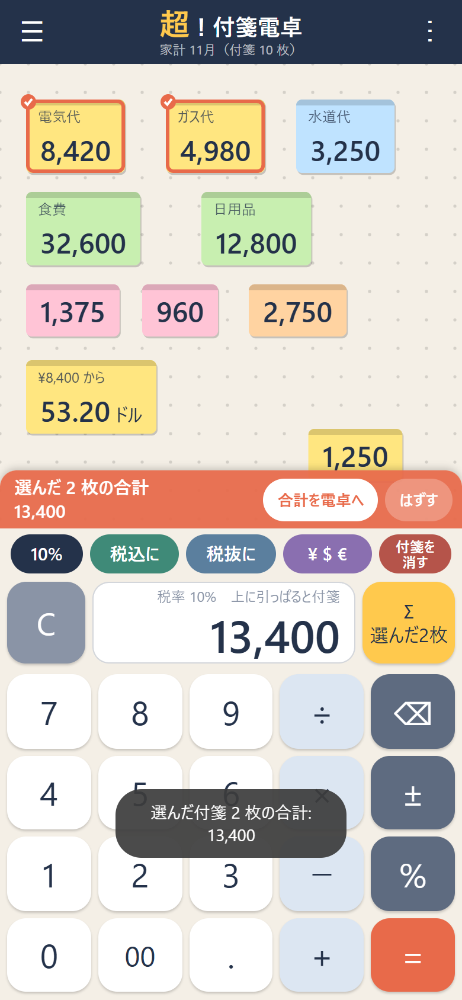
「合計を電卓へ」で白い欄に入る
付箋がたくさんあるときに、好きな付箋だけを足せます。
- 足したい付箋を、1 枚ずつタップします。赤い枠と ✓ が付きます。
- キャンバスの下に赤い帯が出て、「選んだ ◯ 枚の合計」がいつも見えます。タップするたびに変わります。
- 「合計を電卓へ」を押すと、その合計が白い欄に入ります。続けて計算できます。
- 「はずす」を押すと、選んだ印が全部はずれます。
- 右の「Σ」ボタンでも合計できます。選んだ付箋があればその合計（ボタンに「選んだ ◯ 枚」と出ます）、なければ全部の付箋の合計です。
- 円・ドル・ユーロの付箋がまざっていると、「お金の種類が混ざっています」と出ます。
- 何も選んでいないときは、キャンバスの下に「付箋をタップすると選べます」と案内が出ます。
8. 付箋を消す・戻す
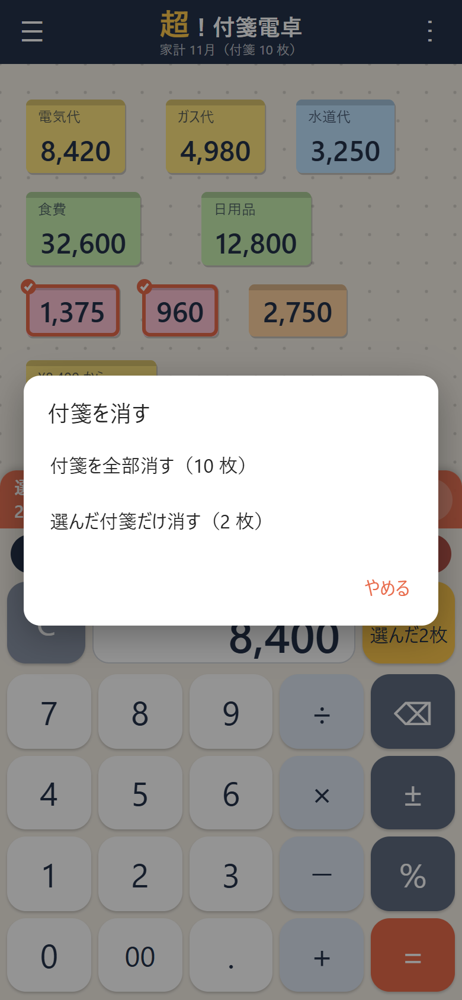
「付箋を消す」を押したところ
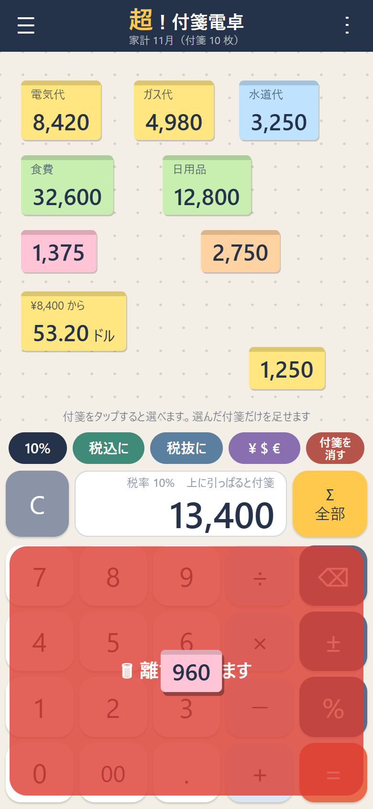
付箋をキーの所へ引っぱると、赤いゴミ箱
まとめて消す
- 「付箋を消す」を押します。
- 「付箋を全部消す」または「選んだ付箋だけ消す」（付箋を選んでいるときだけ出ます）を選びます。
- 全部消すときは、「本当に消しますか？」と聞かれます。
1 枚だけ消す
- 付箋を下のキーの所へ引っぱると、赤いゴミ箱が出ます。その上で離すと消えます。
- 付箋を長押し →「消す」でも消せます。
戻す
- 消したすぐあとなら、「付箋を消す」→「消した付箋を戻す」で戻せます（まとめて消したときは、まとめて戻ります）。
9. 消費税
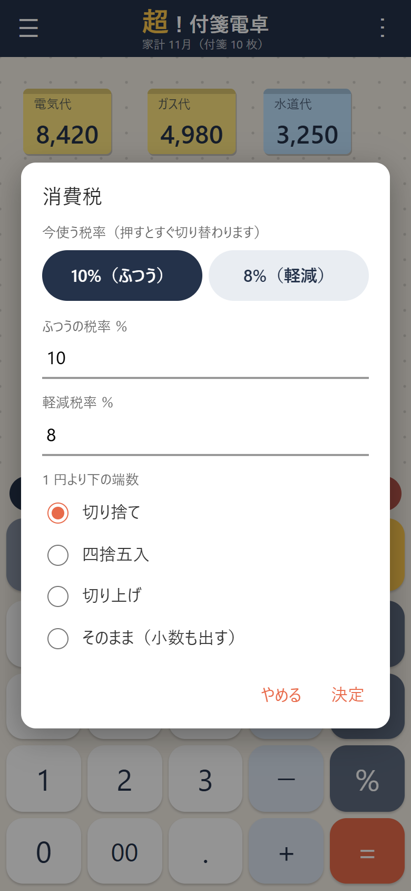
「10%」を押すと出る、消費税の画面
- 白い欄に金額を出して、「税込に」または「税抜に」を押します。
- 例: 1,250 →「税込に」→ 1,375（10% のとき）
- 左の「10%」は、今使っている税率です。押すと消費税の画面が開きます。
- 上の「10%（ふつう）」「8%（軽減）」を押すと、すぐ切り替わります（ボタンの字も「8%」に変わります）。
- 税率の数字と、1 円より下の端数（切り捨て・四捨五入・切り上げ・そのまま）も変えられます。変えたら「決定」。
10. 円・ドル・ユーロ
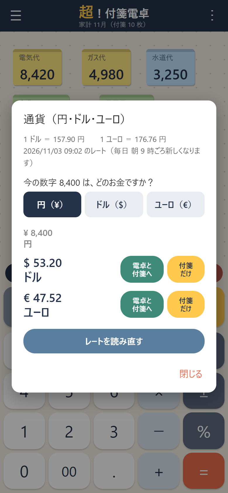
8,400 円を、ドルとユーロに直したところ
- 白い欄に金額を出して、「¥ $ €」を押します。
- 「今の数字は、どのお金ですか？」で、円・ドル・ユーロのどれかを選びます。
- ほかの 2 つのお金に直した数字が出ます。
- 「電卓と付箋へ」: 直した数字を白い欄に入れ、同じ数字の付箋も貼ります。付箋には「ドル」「ユーロ」「円」の字と、元の金額（例「¥8,400 から」）が付きます。
- 「付箋だけ」: 付箋を貼るだけ（白い欄はそのまま）。
- レートはインターネットから読みます（ExchangeRate-API。毎日 朝 9 時ごろ新しくなります）。上に「1 ドル ＝ ◯ 円」と、いつのレートかが出ます。
- 「レートを読み直す」で新しく読みます。電波がないときは、前に読んだレートを使います。
- ドル・ユーロは小数 2 けた、円は 1 円まで（四捨五入）です。
11. キャンバス（付箋を貼る画面）
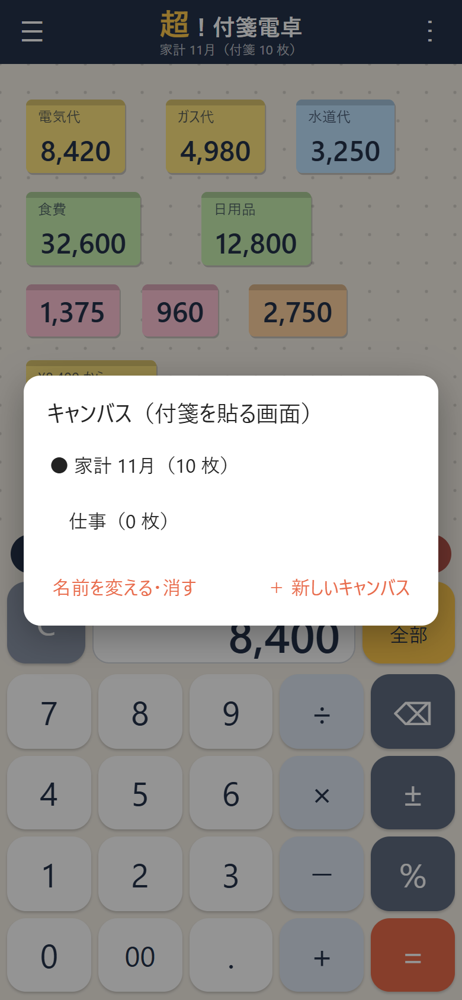
「☰」で、キャンバスを切り替える・作る
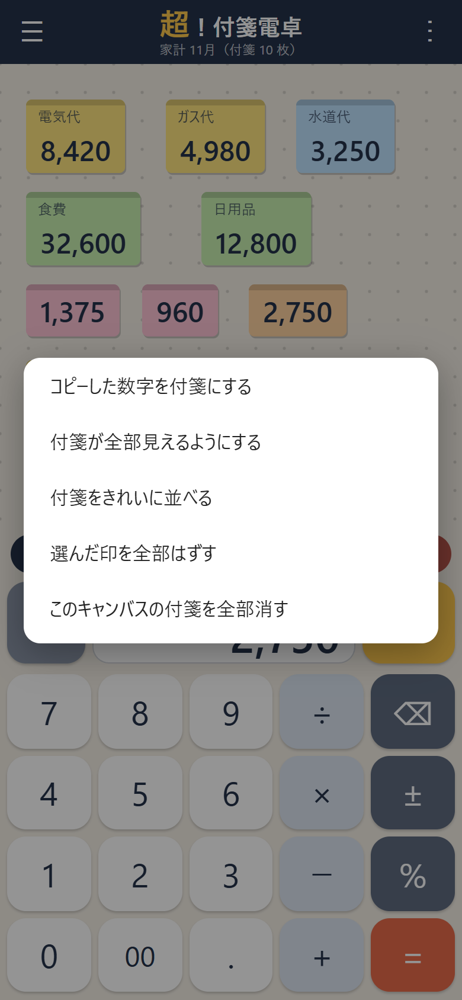
何もない所を長押しすると出るメニュー
動かす・広げる
| すること |
やり方 |
| キャンバスを動かす |
2 本の指で動かす。何もない所を 1 本指で引っぱっても動く |
| 広げる・縮める |
2 本の指を広げる・せばめる |
| 付箋が全部見えるように戻す |
何もない所を 2 回続けてタップ |
何もない所を長押しすると、「コピーした数字を付箋にする」「付箋が全部見えるようにする」「付箋をきれいに並べる」「選んだ印を全部はずす」などが出ます。
キャンバスを何枚も使う
- 左上の「☰」で、キャンバスを切り替えます（例: 「家計 11月」「仕事」）。
- 「＋ 新しいキャンバス」で作ります。「名前を変える・消す」で、今のキャンバスの名前を変えたり、消したりできます。
- 上の題名の下に、今のキャンバスの名前と付箋の枚数が出ます。
12. 履歴とメニュー
- 「︙」→「履歴」: 「＝」・税込・％・合計などの計算の記録（新しい順に 300 件まで）。
- 履歴をタップすると、「答えを電卓に入れる」「答えを付箋にする（メモに式）」が選べます。
- 「︙」のメニューには、ほかに「通貨」「消費税の設定」「新しい付箋の色」「付箋をきれいに並べる」「付箋が全部見えるようにする」「キーを押したとき振動する」「付箋にしたあと、数字を欄に（残す・残さない）」「使い方」「このアプリについて」があります。
13. 困ったときは
| こんなとき |
すること |
| 付箋ができない |
白い欄を、押さえたまま上のキャンバスまで引っぱって離します。キャンバスが赤く囲まれた所で離してください |
| 付箋を動かそうとしたら、キャンバスが動いた |
付箋の上を押さえて引っぱります。付箋のない所を引っぱると、キャンバスが動きます |
| 付箋が見えなくなった |
何もない所を 2 回タップ（全部見える位置に戻ります） |
| まちがえて付箋を消した |
すぐなら「付箋を消す」→「消した付箋を戻す」 |
| 合計が思ったのとちがう |
選んだ付箋（赤い枠）があると、その合計になります。「はずす」で選んだ印をはずすと、Σ で全部の合計 |
| レートが読めない |
インターネットにつながっているか確かめて、「レートを読み直す」 |
| 「エラー」と出た |
0 で割ったときです。「C」を押します |
| 付箋にしたら、白い欄の数字が 0 になった |
「︙」→「付箋にしたあと、数字を欄に: 残さない」になっています。押すと「残す」に変わります |
| 「計算式がありません」と出た |
打った数字をそのまま付箋にしたものか、前の版で作った付箋です |
データについて
- 付箋・履歴・設定は、このブラウザの中に保存されます。ほかのブラウザや、ほかの機械とは共有されません。
- ブラウザの「履歴とWebサイトデータを消去」をすると、付箋も消えます。
- iPhone・iPad では、ホーム画面に追加したアイコンから開いて使ってください（Safari で開いたときと、保存の場所が別になります）。